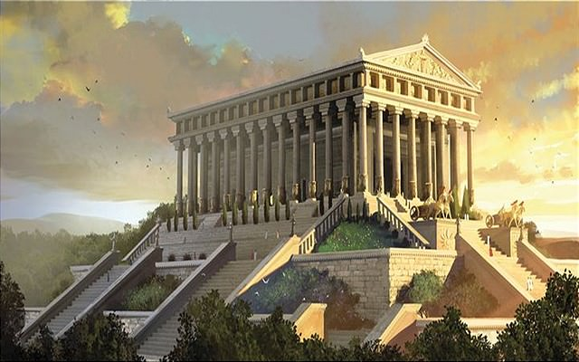

Artemis Tapınağı, (Yunanca: Artemision; Latince: Artemisium) aynı zamanda Diana Tapınağı olarak da bilinir. Tanrıça Artemis'e ithaf edilmiş tapınak Efes'te Milattan önce 550 yıllarında tamamlanmıştır. Tapınak tamamen mermerden inşa edilmiştir. Dünyanın yedi harikasından biri sayılan tapınaktan geriye bugün sadece bir iki mermer parçası kalmıştır. Türkiye'deki antik kent Selçuk İzmir'de bulunmaktadır.
Tapınak Lidya Kralı Kroisos tarafından başlatılmış 120 senelik bir projenin eseridir.Dünyanın yedi harikasını derleyen Sidon'lu Antipader tapınağı şöyle tarif etmiştir:
Mağrur Babil'in üstünde savaş arabaları için yol olan duvarını ve Alpheus'taki Zeus heykelini ve asma bahçeleri gördüm ve Güneşin kolosusunu ve yüksek piramitlerin devasa işçiliğini ve Mausolos'un engin mezarını; ama Artemis'in bulutlar üzerine kurulmuş evini gördüğümde diğer tüm harikalar parlaklıklarını kaybetti ve dedim ki "İşte! Olimpus'un dışında, Güneş hiç bu kadar büyük bir şeye bakmadı.
